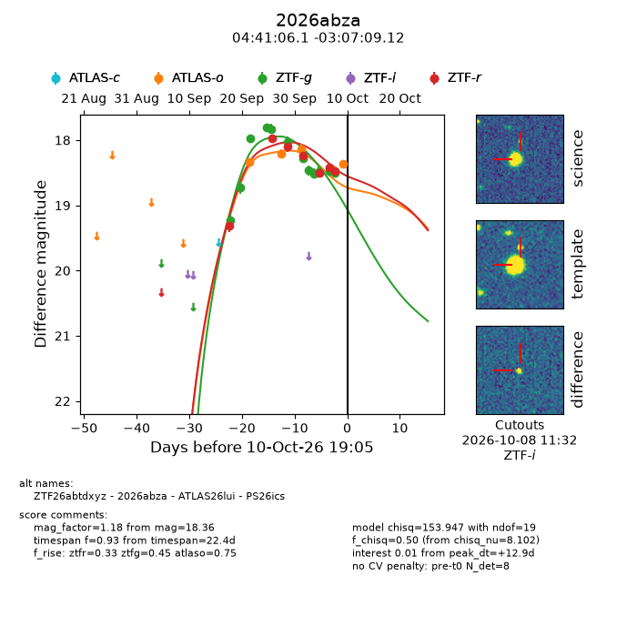
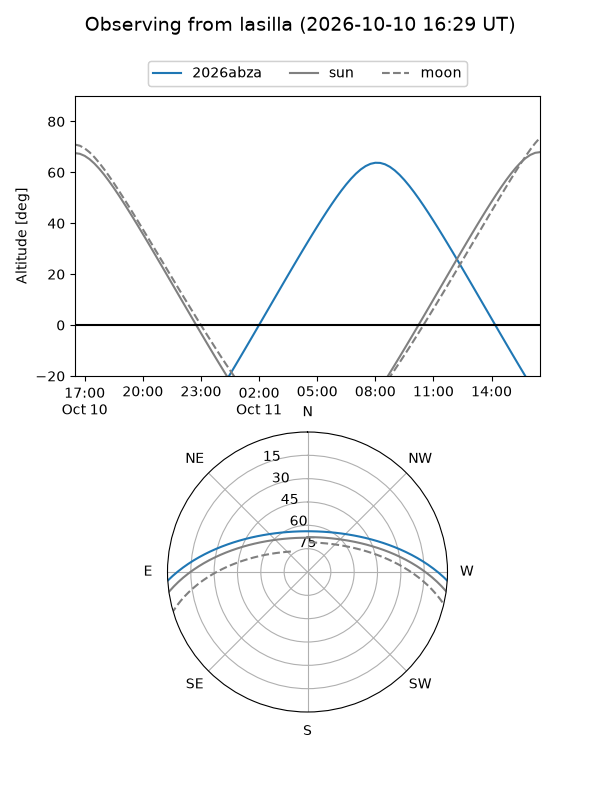
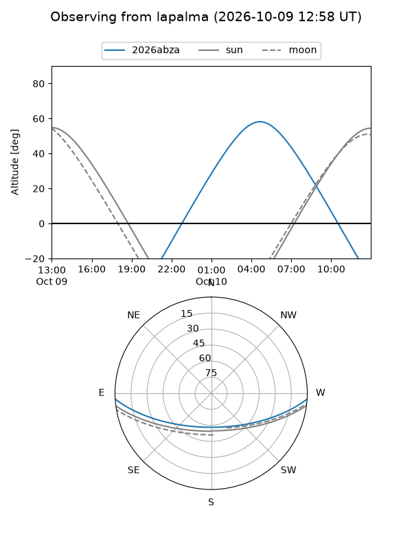
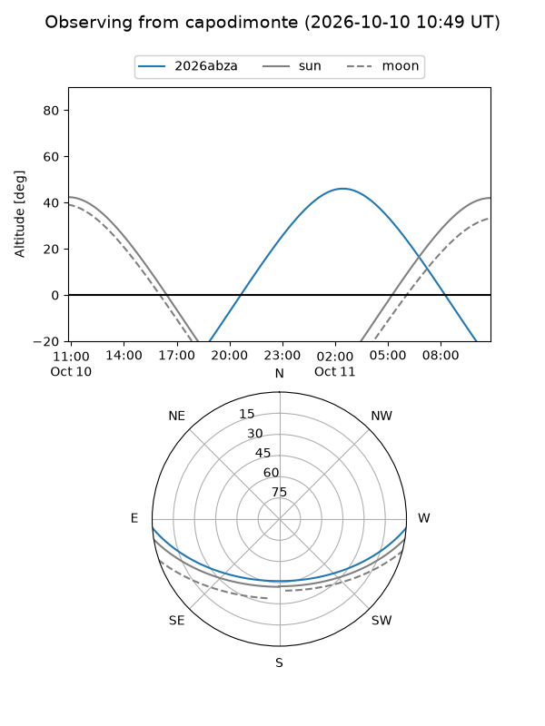
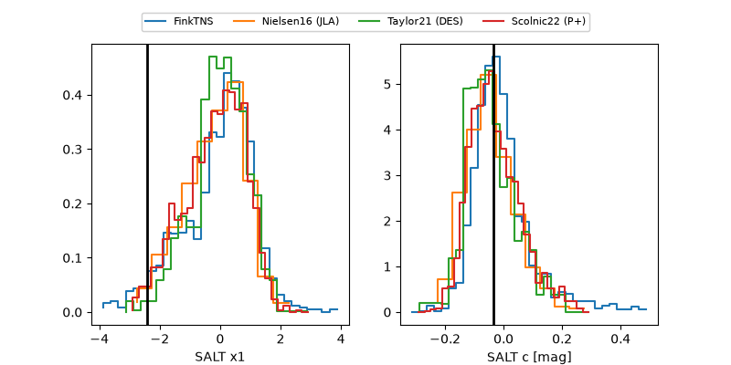

2026abza
Target 2026abza at 2026-10-10 19:06
Aliases and brokers:
FINK-ZTF: ztf.fink-portal.org/ZTF26abtdxyz
Lasair-ZTF: lasair-ztf.lsst.ac.uk/objects/ZTF26abtdxyz
ALeRCE-ZTF: alerce.online/object/ZTF26abtdxyz
YSE-PZ: ziggy.ucolick.org/yse/transient_detail/2026abza
TNS name: wis-tns.org/object/2026abza
Direct TNS query: direct search
alt names
ZTF26abtdxyz (ztf,fink_ztf)
2026abza (tns,yse)
ATLAS26lui (atlas)
PS26ics (panstarrs)
Coordinates:
equatorial (ra, dec) = 70.2756,-3.11920
equatorial (HMS+DMS) = 04:41:06.15,-03:07:09.12
galactic (l, b) = (199.7685,-30.22454)
Flags:
peak dt: +12.9
Photometry:
last atlaso=18.36, ztfg=18.51, ztfr=18.47
5 atlaso, 12 ztfg, 7 ztfr detections
Lightcurve

Visibility



Additional plots
